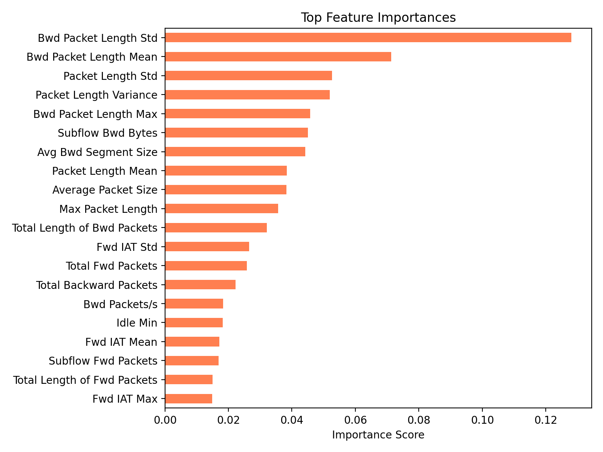

A core limitation of black-box machine learning classifiers in Security Operations Centre (SOC) workflows is their inability to articulate why a specific network flow was flagged as an attack. Without interpretable justification, analysts cannot distinguish a genuine intrusion from a false alarm, correlate the alert with other signals, or produce a defensible incident report. To address this, the NIDS pipeline integrates a SHAP (SHapley Additive exPlanations) explainability engine that produces per-prediction feature attributions for every classified flow at inference time.
SHAP is grounded in cooperative game theory: the Shapley value of feature i for a given prediction is the average marginal contribution of feature i across all possible feature coalitions [Lundberg & Lee, 2017]. For tree-based models, exact Shapley values can be computed in polynomial time using the TreeSHAP algorithm, avoiding the exponential-time sampling required by the model-agnostic KernelSHAP variant.
The SHAP explainer is built once after model training by
src/utils/model_optimizer.py and persisted to disk as
models/shap_explainer.pkl. This offline step ensures that
the expensive TreeSHAP initialisation is never repeated at inference
time.
Before constructing the SHAP explainer, the script ranks all available
features using the trained model's built-in
feature_importances_ attribute (Gini importance for
tree-based models). The Top-20 features are selected
and saved to models/top_20_features.json. This list serves
as the canonical feature set for all downstream preprocessing,
inference, and SHAP reporting:
importances = pd.Series(model.feature_importances_, index=feature_names) top_features = importances.sort_values(ascending=False).head(args.top_k) # k=20 with open(args.top_features_path, "w") as fp: json.dump({"top_features": top_features.index.tolist()}, fp)
A shap.TreeExplainer is instantiated using the trained
model and a 500-sample background dataset sampled from
the training partition (random_state=42). The background
dataset defines the reference distribution against which marginal
feature contributions are computed — it represents the "expected" model
output when feature values are unknown, directly analogous to the
baseline in Shapley value theory:
# 500-sample background from training data (Top-20 features only) background = shap.utils.sample( df[top_features.index], args.background_samples, # default: 500 random_state=42 ) explainer = shap.TreeExplainer(model, background) joblib.dump(explainer, args.shap_path) # → models/shap_explainer.pkl
The background dataset is used to marginalise over "missing" feature values when computing Shapley contributions. 500 samples provides a statistically stable estimate of the marginal distribution at a fraction of the full training set size (~2.27M rows), keeping explainer initialisation under 10 seconds on CPU.
At production inference time, the XAI engine
(src/utils/xai_engine.py) provides the
explain_attack() function, called for every flow classified
as Volumetric or Semantic by the Kafka Consumer. The engine is designed
for low-overhead serving: the explainer and feature list are loaded once
at module import (warm-up on import, line 40) and cached in
module-level globals — subsequent calls incur only the cost of the
Shapley value computation itself.
def explain_attack(input_vector, feature_names, attack_class_index=1, top_n=3) → List[dict]: vector = np.asarray(input_vector, dtype=np.float64).reshape(1, -1) shap_values = _EXPLAINER(vector) # exact TreeSHAP computation attack_values = shap_values[attack_class_index][0] # per-class SHAP array contributions = [] for name, value in zip(feature_names, attack_values): if name not in top_features: continue # filter to Top-20 only contributions.append({ "feature": name, "direction": "positive" if value >= 0 else "negative", "impact": abs(float(value)) }) contributions.sort(key=lambda x: x["impact"], reverse=True) # Classify magnitude: High ≥ 0.5 | Medium ≥ 0.2 | Low < 0.2 return top_n_formatted_results
The function returns the
Top-3 contributing features (default
top_n=3) restricted to the curated Top-20 feature set,
ranked by absolute SHAP value |φᵢ|. Each feature is assigned a magnitude
classification:
| Magnitude Class | |SHAP| Threshold | Interpretation |
|---|---|---|
| High | ≥ 0.5 | Dominant driver of the attack prediction — primary indicator for the analyst |
| Medium | 0.2 – 0.5 | Significant secondary signal, corroborates the alert |
| Low | < 0.2 | Minor contributing factor, context only |
[
{ "feature": "Bwd Packet Length Std", "impact": "High (positive |SHAP|=0.7142)" },
{ "feature": "Fwd IAT Std", "impact": "Medium (negative |SHAP|=0.3214)" },
{ "feature": "Total Fwd Packets", "impact": "Low (positive |SHAP|=0.0891)" }
]
This structured output is serialised to JSON and stored alongside every
alert record in alerts.db, ensuring that each alert carries
a complete, auditable explanation accessible from the Streamlit
dashboard — enabling SOC analysts to validate or dismiss alerts based on
the feature evidence without requiring access to the model source code.
Figure 1 shows the Gini-based feature importances used to derive the
Top-20 feature set, ranked by importance score. The chart was generated
by
model_optimizer.py and saved to
reports/data/top20_features.png.

| Rank | Feature | Category | Importance | Relative Strength |
|---|---|---|---|---|
| 1 | Bwd Packet Length Std | Packet Size | 0.127 | |
| 2 | Bwd Packet Length Mean | Packet Size | 0.070 | |
| 3 | Packet Length Std | Packet Size | 0.052 | |
| 4 | Packet Length Variance | Packet Size | 0.051 | |
| 5 | Bwd Packet Length Max | Packet Size | 0.046 | |
| 6 | Subflow Bwd Bytes | Byte Volume | 0.045 | |
| 7 | Avg Bwd Segment Size | Packet Size | 0.044 | |
| 8 | Packet Length Mean | Packet Size | 0.039 | |
| 9 | Average Packet Size | Packet Size | 0.039 | |
| 10 | Max Packet Length | Packet Size | 0.037 | |
| 11 | Total Length of Bwd Packets | Byte Volume | 0.031 | |
| 12 | Fwd IAT Std | Inter-Arrival Time | 0.026 | |
| 13 | Total Fwd Packets | Flow Count | 0.025 | |
| 14 | Total Backward Packets | Flow Count | 0.022 | |
| 15 | Bwd Packets/s | Flow Rate | 0.019 | |
| 16 | Idle Min | Timing | 0.018 | |
| 17 | Fwd IAT Mean | Inter-Arrival Time | 0.018 | |
| 18 | Subflow Fwd Packets | Flow Count | 0.017 | |
| 19 | Total Length of Fwd Packets | Byte Volume | 0.015 | |
| 20 | Fwd IAT Max | Inter-Arrival Time | 0.014 |
The dominance of backward packet statistics (Ranks 1, 2, 5, 6, 7, 11) in the feature importance ranking is consistent with the asymmetric nature of intrusion traffic: attack tools such as LOIC, hping3, and Slowloris generate floods of forward (source→target) packets with minimal or no legitimate backward (target→source) responses. This produces anomalous backward packet length distributions — high standard deviation and mean when partial responses are elicited, near-zero when no response occurs. The model effectively learns that abnormal backward communication is the most reliable signature of malicious flows.
The direction field in each SHAP attribution indicates
whether the feature value increased (positive) or
decreased
(negative) the model's confidence in the predicted attack class:
Each SHAP-attributed alert transforms from a binary alarm into a structured evidence report. An analyst receiving a Volumetric alert with attribution "Bwd Packet Length Std: High positive impact" immediately knows the flow has anomalous response packet variability — consistent with a DDoS flood receiving intermittent server responses. This is directly actionable: the analyst can cross-reference with netflow counters and confirm or dismiss the alert without accessing the raw model internals.
Lundberg, S. M., & Lee, S. I. (2017). A unified approach to interpreting model predictions. Advances in Neural Information Processing Systems (NeurIPS), 30. | TreeSHAP algorithm: Lundberg, S. M., et al. (2020). From local explanations to global understanding with explainable AI for trees. Nature Machine Intelligence, 2(1), 56–67.
Explainer type: shap.TreeExplainer —
exact Shapley values (no approximation), polynomial-time computation
for tree-based models (Random Forest, XGBoost, Decision Tree).
Background dataset: 500 samples drawn from the
training partition (random_state=42), restricted to the
Top-20 feature columns, defining the marginal reference distribution
for Shapley value computation.
Feature scope: SHAP values computed over all input
features, but attributions reported only for the curated Top-20 set
(top_20_features.json), ensuring consistency with the
training feature schema.
Output format: Top-3 features ranked by |φᵢ|
(absolute SHAP value), each classified as High (≥0.5), Medium (≥0.2),
or Low (<0.2) with direction (positive/negative), serialised to
JSON and stored in alerts.db per alert.
Serving pattern: Warm-up on module import (single
joblib.load() at startup), then O(1) lookup per inference
call — no per-prediction I/O overhead.